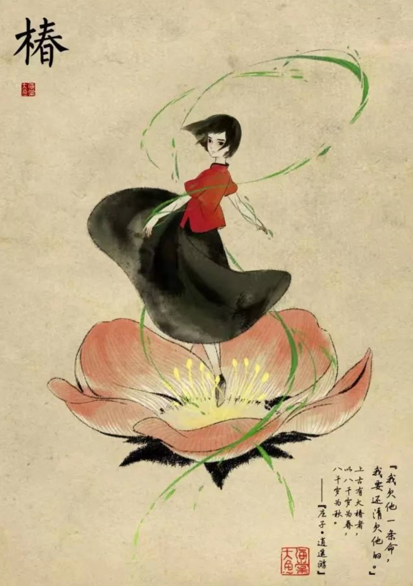

角色简介【主演】

椿
身为家族继承者，能让植物生长。性格坚强执着，对人类世界充满好奇，有感恩的心和责任感，虽然外表看上去有些冷漠严肃，但是内心是非常细腻，富有同情心。“楚之南有冥灵者，以五百岁为春，五百岁为秋；上古有大椿者，以八千岁为春，八千岁为秋。
身为家族继承者，能让植物生长。性格坚强执着，对人类世界充满好奇，有感恩的心和责任感，虽然外表看上去有些冷漠严肃，但是内心是非常细腻，富有同情心。“楚之南有冥灵者，以五百岁为春，五百岁为秋；上古有大椿者，以八千岁为春，八千岁为秋。